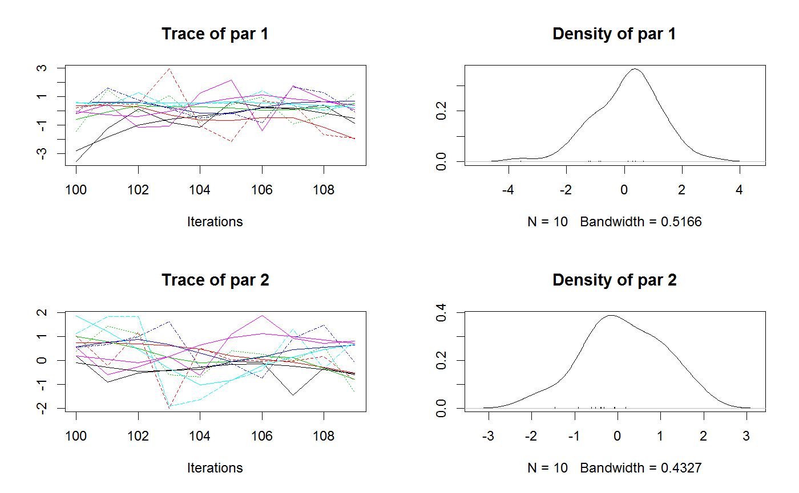

<!-- Generated by pkgdown: do not edit by hand -->
<!DOCTYPE html>
<html>
  <head>
  <meta charset="utf-8">
<meta http-equiv="X-UA-Compatible" content="IE=edge">
<meta name="viewport" content="width=device-width, initial-scale=1.0">

<title>Extracts the sample from a bayesianOutput — getSample • BayesianTools</title>

<!-- jquery -->
<script src="https://code.jquery.com/jquery-3.1.0.min.js" integrity="sha384-nrOSfDHtoPMzJHjVTdCopGqIqeYETSXhZDFyniQ8ZHcVy08QesyHcnOUpMpqnmWq" crossorigin="anonymous"></script>
<!-- Bootstrap -->

<link href="https://maxcdn.bootstrapcdn.com/bootstrap/3.3.7/css/bootstrap.min.css" rel="stylesheet" integrity="sha384-BVYiiSIFeK1dGmJRAkycuHAHRg32OmUcww7on3RYdg4Va+PmSTsz/K68vbdEjh4u" crossorigin="anonymous">
<script src="https://maxcdn.bootstrapcdn.com/bootstrap/3.3.7/js/bootstrap.min.js" integrity="sha384-Tc5IQib027qvyjSMfHjOMaLkfuWVxZxUPnCJA7l2mCWNIpG9mGCD8wGNIcPD7Txa" crossorigin="anonymous"></script>

<!-- Font Awesome icons -->
<link href="https://maxcdn.bootstrapcdn.com/font-awesome/4.6.3/css/font-awesome.min.css" rel="stylesheet" integrity="sha384-T8Gy5hrqNKT+hzMclPo118YTQO6cYprQmhrYwIiQ/3axmI1hQomh7Ud2hPOy8SP1" crossorigin="anonymous">


<!-- pkgdown -->
<link href="../pkgdown.css" rel="stylesheet">
<script src="../jquery.sticky-kit.min.js"></script>
<script src="../pkgdown.js"></script>
  
  
<!-- mathjax -->
<script src='https://mathjax.rstudio.com/latest/MathJax.js?config=TeX-AMS-MML_HTMLorMML'></script>

<!--[if lt IE 9]>
<script src="https://oss.maxcdn.com/html5shiv/3.7.3/html5shiv.min.js"></script>
<script src="https://oss.maxcdn.com/respond/1.4.2/respond.min.js"></script>
<![endif]-->


  </head>

  <body>
    <div class="container template-reference-topic">
      <header>
      <div class="navbar navbar-default navbar-fixed-top" role="navigation">
  <div class="container">
    <div class="navbar-header">
      <button type="button" class="navbar-toggle collapsed" data-toggle="collapse" data-target="#navbar">
        <span class="icon-bar"></span>
        <span class="icon-bar"></span>
        <span class="icon-bar"></span>
      </button>
      <a class="navbar-brand" href="../index.html">BayesianTools</a>
    </div>
    <div id="navbar" class="navbar-collapse collapse">
      <ul class="nav navbar-nav">
        <li>
  <a href="../index.html">
    <span class="fa fa-home fa-lg"></span>
     
  </a>
</li>
<li>
  <a href="../articles/BayesianTools.html">Get Started</a>
</li>
<li>
  <a href="../reference/index.html">Reference</a>
</li>
      </ul>
      
      <ul class="nav navbar-nav navbar-right">
        <li>
  <a href="https://github.com/florianhartig/BayesianTools">
    <span class="fa fa-github fa-lg"></span>
     
  </a>
</li>
      </ul>
    </div><!--/.nav-collapse -->
  </div><!--/.container -->
</div><!--/.navbar -->

      
      </header>

      <div class="row">
  <div class="col-md-9 contents">
    <div class="page-header">
    <h1>Extracts the sample from a bayesianOutput</h1>
    </div>

    
    <p>Extracts the sample from a bayesianOutput</p>
    

    <pre class="usage"><span class='fu'>getSample</span>(<span class='no'>sampler</span>, <span class='kw'>parametersOnly</span> <span class='kw'>=</span> <span class='no'>T</span>, <span class='kw'>coda</span> <span class='kw'>=</span> <span class='no'>F</span>, <span class='kw'>start</span> <span class='kw'>=</span> <span class='fl'>1</span>, <span class='kw'>end</span> <span class='kw'>=</span> <span class='kw'>NULL</span>,
  <span class='kw'>thin</span> <span class='kw'>=</span> <span class='fl'>1</span>, <span class='kw'>numSamples</span> <span class='kw'>=</span> <span class='kw'>NULL</span>, <span class='kw'>whichParameters</span> <span class='kw'>=</span> <span class='kw'>NULL</span>,
  <span class='kw'>includesProbabilities</span> <span class='kw'>=</span> <span class='no'>F</span>, <span class='kw'>reportDiagnostics</span> <span class='kw'>=</span> <span class='fl'>FALSE</span>, <span class='no'>...</span>)</pre>
    
    <h2 class="hasAnchor" id="arguments"><a class="anchor" href="#arguments"></a> Arguments</h2>
    <table class="ref-arguments">
    <colgroup><col class="name" /><col class="desc" /></colgroup>
    <tr>
      <th>sampler</th>
      <td><p>an object of class mcmcSampler, mcmcSamplerList, smcSampler, smcSamplerList, mcmc, mcmc.list, double, numeric</p></td>
    </tr>
    <tr>
      <th>parametersOnly</th>
      <td><p>if F, likelihood, posterior and prior values are also provided in the output</p></td>
    </tr>
    <tr>
      <th>coda</th>
      <td><p>works only for mcmc classes - provides output as a coda object. Note: if mcmcSamplerList contains mcmc samplers such as DE that have several chains, the internal chains will be collapsed. This may not be the desired behavior for all applications.</p></td>
    </tr>
    <tr>
      <th>start</th>
      <td><p>for mcmc samplers start value in the chain. For SMC samplers, start particle</p></td>
    </tr>
    <tr>
      <th>end</th>
      <td><p>for mcmc samplers end value in the chain. For SMC samplers, end particle</p></td>
    </tr>
    <tr>
      <th>thin</th>
      <td><p>thinning parameter. Either an integer determining the thinning intervall (default is 1) or "auto" for automatic thinning.</p></td>
    </tr>
    <tr>
      <th>numSamples</th>
      <td><p>sample size (only used if thin = 1). If you want to use numSamples set thin to 1.</p></td>
    </tr>
    <tr>
      <th>whichParameters</th>
      <td><p>possibility to select parameters by index</p></td>
    </tr>
    <tr>
      <th>includesProbabilities</th>
      <td><p>applies only to getSample.Matrix. logical, determining whether probabilities should be included in the result.</p></td>
    </tr>
    <tr>
      <th>reportDiagnostics</th>
      <td><p>logical, determines whether settings should be included in the output</p></td>
    </tr>
    <tr>
      <th>...</th>
      <td><p>further arguments</p></td>
    </tr>
    </table>
    
    <h2 class="hasAnchor" id="details"><a class="anchor" href="#details"></a>Details</h2>

    <p>If thin is greater than the total number of samples in the sampler object the first and the last element (of each chain if a sampler with multiples chains is used) are sampled. If numSamples is greater than the total number of samples all samples are selected. In both cases a warning is displayed.</p>
<p>If thin and numSamples is passed, the function will use the thin argument if it is valid and greater than 1, else numSamples will be used.</p>
    

    <h2 class="hasAnchor" id="examples"><a class="anchor" href="#examples"></a>Examples</h2>
    <pre class="examples"><div class='input'><span class='no'>ll</span> <span class='kw'>=</span> <span class='kw'>function</span>(<span class='no'>x</span>) <span class='fu'>sum</span>(<span class='fu'>dnorm</span>(<span class='no'>x</span>, <span class='kw'>log</span> <span class='kw'>=</span> <span class='fl'>TRUE</span>))

<span class='no'>setup</span> <span class='kw'>=</span> <span class='fu'><a href='createBayesianSetup.html'>createBayesianSetup</a></span>(<span class='no'>ll</span>, <span class='kw'>lower</span> <span class='kw'>=</span> <span class='fu'>c</span>(-<span class='fl'>10</span>,-<span class='fl'>10</span>), <span class='kw'>upper</span> <span class='kw'>=</span> <span class='fu'>c</span>(<span class='fl'>10</span>,<span class='fl'>10</span>))

<span class='no'>settings</span> <span class='kw'>=</span> <span class='fu'>list</span>(<span class='kw'>nrChains</span> <span class='kw'>=</span> <span class='fl'>2</span>, <span class='kw'>iterations</span> <span class='kw'>=</span> <span class='fl'>1000</span>)
<span class='no'>out</span> <span class='kw'>&lt;-</span> <span class='fu'><a href='runMCMC.html'>runMCMC</a></span>(<span class='kw'>bayesianSetup</span> <span class='kw'>=</span> <span class='no'>setup</span>, <span class='kw'>sampler</span> <span class='kw'>=</span> <span class='st'>"DEzs"</span>, <span class='kw'>settings</span> <span class='kw'>=</span> <span class='no'>settings</span>)</div><div class='output co'>#&gt; 
 Running DEzs-MCMC, chain  1 iteration 300 of 1002 . Current logp  -14.26114 -8.366528 -8.935835 . Please wait! 

 Running DEzs-MCMC, chain  1 iteration 600 of 1002 . Current logp  -9.937957 -8.081307 -7.929941 . Please wait! 

 Running DEzs-MCMC, chain  1 iteration 900 of 1002 . Current logp  -8.117279 -8.05287 -9.947761 . Please wait! 

 Running DEzs-MCMC, chain  1 iteration 1002 of 1002 . Current logp  -8.392833 -10.03726 -9.426219 . Please wait! 
</div><div class='output co'>#&gt; <span class='message'>runMCMC terminated after 0.150000000000091seconds</span></div><div class='output co'>#&gt; 
 Running DEzs-MCMC, chain  2 iteration 300 of 1002 . Current logp  -7.991262 -8.611373 -7.993276 . Please wait! 

 Running DEzs-MCMC, chain  2 iteration 600 of 1002 . Current logp  -8.018305 -13.25595 -8.069903 . Please wait! 

 Running DEzs-MCMC, chain  2 iteration 900 of 1002 . Current logp  -8.563249 -7.926249 -8.226997 . Please wait! 

 Running DEzs-MCMC, chain  2 iteration 1002 of 1002 . Current logp  -7.835189 -8.293727 -8.162822 . Please wait! 
</div><div class='output co'>#&gt; <span class='message'>runMCMC terminated after 0.150000000000091seconds</span></div><div class='input'>
<span class='co'># population MCMCs divide the interations by the number of internal chains,</span>
<span class='co'># so the end of the 3 chains is 1000/3 = 334</span>
<span class='no'>sample</span> <span class='kw'>&lt;-</span> <span class='fu'>getSample</span>(<span class='no'>out</span>, <span class='kw'>start</span> <span class='kw'>=</span> <span class='fl'>100</span>, <span class='kw'>end</span> <span class='kw'>=</span> <span class='fl'>334</span>, <span class='kw'>thin</span> <span class='kw'>=</span> <span class='fl'>10</span>)

<span class='co'># sampling with number of samples instead of thinning and</span>
<span class='co'># returning a coda object</span>
<span class='no'>sample</span> <span class='kw'>&lt;-</span> <span class='fu'>getSample</span>(<span class='no'>out</span>, <span class='kw'>start</span> <span class='kw'>=</span> <span class='fl'>100</span>, <span class='kw'>numSamples</span> <span class='kw'>=</span> <span class='fl'>60</span>, <span class='kw'>coda</span> <span class='kw'>=</span> <span class='fl'>TRUE</span>)
<span class='fu'>plot</span>(<span class='no'>sample</span>)</div><div class='img'></div><div class='input'>

<span class='co'># MCMC with a single chain:</span>
<span class='no'>settings_2</span> <span class='kw'>&lt;-</span> <span class='fu'>list</span>(<span class='kw'>nrChains</span> <span class='kw'>=</span> <span class='fl'>1</span>, <span class='kw'>iterations</span> <span class='kw'>=</span> <span class='fl'>1000</span>)
<span class='no'>out_2</span> <span class='kw'>&lt;-</span> <span class='fu'><a href='runMCMC.html'>runMCMC</a></span>(<span class='no'>setup</span>, <span class='kw'>sampler</span> <span class='kw'>=</span> <span class='st'>"Metropolis"</span>, <span class='kw'>settings</span> <span class='kw'>=</span> <span class='no'>settings_2</span>)</div><div class='output co'>#&gt; BT runMCMC: trying to find optimal start and covariance values </div><div class='output co'>#&gt; <span class='message'>BT runMCMC: Optimization finished, setting startValues to 0.000180983530656439 -0.000617049956313312  - Setting covariance to 1.00030603546159 2.97025209409184e-06 2.97025209409184e-06 1.00000530260387 </span></div><div class='output co'>#&gt; 
 Running Metropolis-MCMC, chain  1 iteration 100 of 1000 . Current logp:  -9.532038  Please wait! 

 Running Metropolis-MCMC, chain  1 iteration 200 of 1000 . Current logp:  -8.668119  Please wait! 

 Running Metropolis-MCMC, chain  1 iteration 300 of 1000 . Current logp:  -7.900279  Please wait! 

 Running Metropolis-MCMC, chain  1 iteration 400 of 1000 . Current logp:  -8.629034  Please wait! 

 Running Metropolis-MCMC, chain  1 iteration 500 of 1000 . Current logp:  -8.510623  Please wait! 

 Running Metropolis-MCMC, chain  1 iteration 600 of 1000 . Current logp:  -9.273203  Please wait! 

 Running Metropolis-MCMC, chain  1 iteration 700 of 1000 . Current logp:  -7.956503  Please wait! 

 Running Metropolis-MCMC, chain  1 iteration 800 of 1000 . Current logp:  -8.932149  Please wait! 

 Running Metropolis-MCMC, chain  1 iteration 900 of 1000 . Current logp:  -8.071972  Please wait! 

 Running Metropolis-MCMC, chain  1 iteration 1000 of 1000 . Current logp:  -8.17257  Please wait! 
</div><div class='output co'>#&gt; <span class='message'>runMCMC terminated after 0.199999999999818seconds</span></div><div class='input'><span class='no'>sample_2</span> <span class='kw'>&lt;-</span> <span class='fu'>getSample</span>(<span class='no'>out_2</span>, <span class='kw'>numSamples</span> <span class='kw'>=</span> <span class='fl'>100</span>)</div></pre>
  </div>
  <div class="col-md-3 hidden-xs hidden-sm" id="sidebar">
    <h2>Contents</h2>
    <ul class="nav nav-pills nav-stacked">
      <li><a href="#arguments">Arguments</a></li>
      
      <li><a href="#details">Details</a></li>
      
      <li><a href="#examples">Examples</a></li>
    </ul>

    <h2>Author</h2>
    
Florian Hartig

  </div>
</div>

      <footer>
      <div class="copyright">
  <p>Developed by Florian Hartig, Francesco Minunno, Stefan  Paul.</p>
</div>

<div class="pkgdown">
  <p>Site built with <a href="http://hadley.github.io/pkgdown/">pkgdown</a>.</p>
</div>

      </footer>
   </div>

  </body>
</html>
